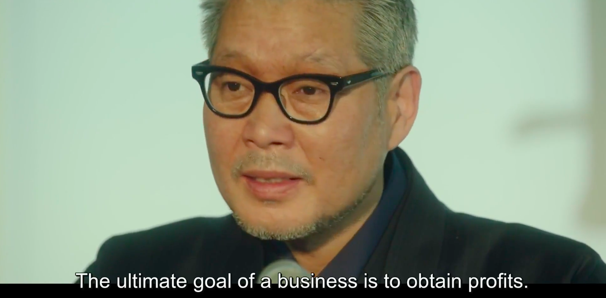
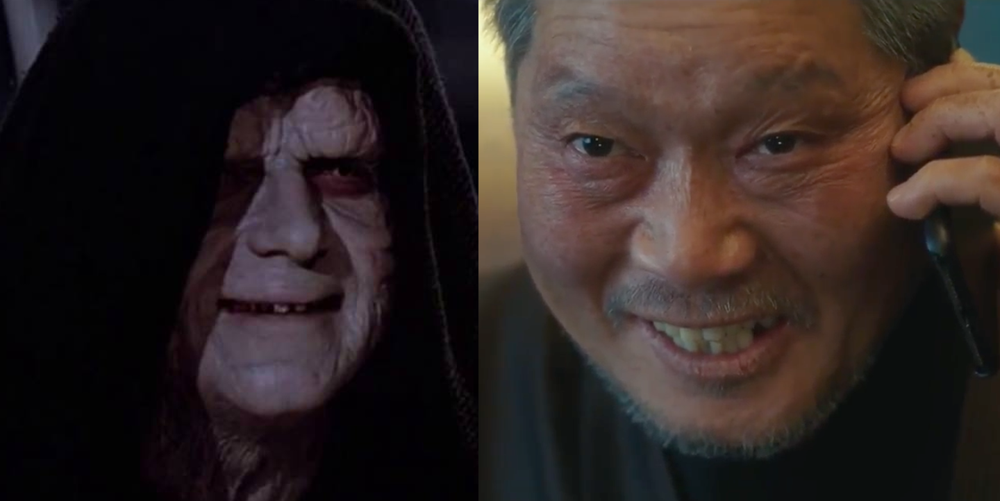
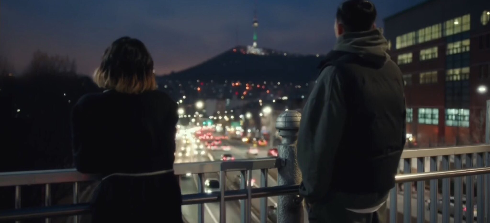
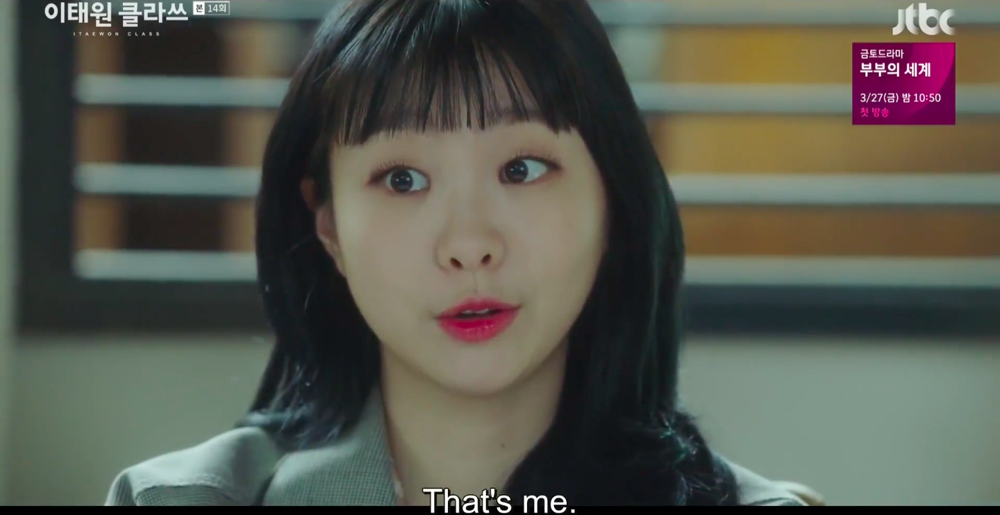
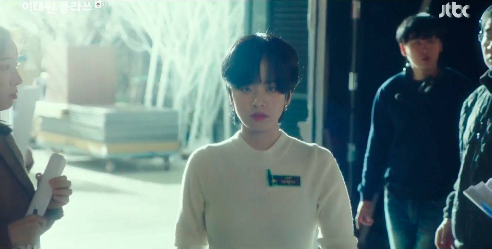
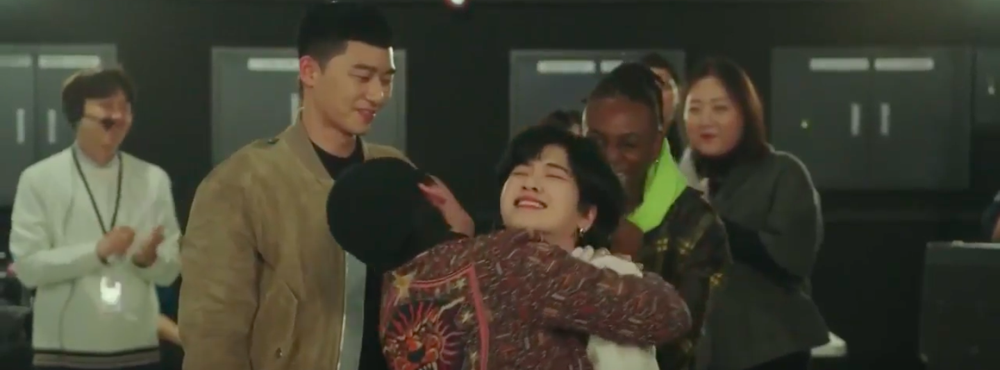

<link rel="stylesheet" href="fullbleed.css">
<link rel="stylesheet" href="https://fonts.googleapis.com/css?family=Roboto">
<head>
  <link rel="icon" href="favicon.ico">
  <title>Itaewon Class</title>
</head>
<main class="wrapper">
  <h1 class="center">Itaewon Class</h1>
  
<p>Behind every great fortune is a crime properly executed, or a drama about a group of misfits persevering sweetly and diligently. Because of financial pressure, Itaewon Class felt more gritty and fiery than other kdramas I've seen, motivating people and putting them into compromising situations.</p> 

<p>Everyone has their own personal war on the world, but the two main characters are Chairman Jang and Sae-ro-yi. They recognize their own similarity, and both need to make business profitable, so Sae-ro-yi needs to do right by people and not become Chairman Jang in the process of destroying him. Actually, the hope for basically everyone in the show is that they don't become Chairman Jang en route to their goals.</p>
<p>That's why I was disappointed when Sae-ro-yi let Chairman Jang kneel in the end. When I saw Sae-ro-yi kneel to save Yi-seo and realize it was easy and didn't even make Jang feel better, I thought he'd get over his need for revenge and go straight to living happily. His admission that he wasted a decade of his life trying to get Jang to kneel was in a way the most damning thing he could say about Jang's life, which became entirely consumed by making people kneel. So that would've been a neat way to end it, idk. I was hoping he'd be nice in the end - I loved how seriously he and Jang both took food, and his line "I put a lot of care into fermented soybean powder". Like idk I feel like he could've wrapped it up by saying I'll take care of Jangga because at its core it's a good food company, not to spite you.</p>
<p>Jang also made his sons into (partial) versions of himself. I liked how when they were being bad both sons had a similar sort of pained, unhappy expression, like they weren't even managing to smirk they were just so clearly unhappy douchebags. The bully I thought started out unredeemable, looked briefly like he might realize his father is messed up, but was doomed anyways. Him laughing like his father was  sort of pathetic because in general he had his father's malice but not his insight or competence. The wedlock kid I thought was good at first, then after outing Hyun-yi I thought he was totally unredeemable and tbh was surprised they even let him apologize, although seeing her punch him was satisfying.</p>
<p>Kept alive purely by hatred, darth Jang:</p>
  
<p>There were a lot of people both fighting to win and to not fall to the dark side along the way. Since kdramas give everyone their emotional moments they were all good characters, but with that said the ex con and the black guy seemed relatively uninteresting in that the compromising situations at DanBam weren't really about them. Like they were very wholesome in the face of having a lot to struggle with, but because they were always so wholesome they were sort of boring. What I really liked about Itaewon Class was the people who looked like they'd either be destroyed by darth Jang and co or turn into him. Sae-ro-yi, Yi-seo, and Hyun-yi relied so heavily on one another while figuring themselves out. It's not like other people didn't also rely on the DanBam crew, but those three had to grow the most during the show.</p>
<p>I liked Sae-ro-yi eventually ending up with Yi-seo but for timeskips or whatever reason the process of him gradually loving her was a bit uneven. I will go to you like the first snow outlines the conventions I'd expect from a kdrama: 1) watching over you and being excited 2) being ridiculously jealous 3) all the ordinary things. Because they skip these steps, or at least don't show them all as excruciatingly as Goblin/Crash Landing on You, the couple isn't as compelling in the kdrama tradition. I also didn't like the narration of his manual labor or her work at Itaewon Class/DanBam because it felt more like telling than showing, so compared to the kdrama steps for demonstrating affection it was less convincing.</p>
<p>That said, I do think they made sense together. The Yi-seo, Sae-ro-yi, Soo-ah triangle verged on skater girlesque but their motivations made sense. Yi-seo being depressed at first is the critical thing - I saw her as on the path to a funny/tragic Korean girl version of American Psycho. So because she needed something to be excited about waking up in the morning and drinking sweet soju at night, she and Sae-ro-yi were able to save each other.</p>
<p>I guess they did have some nice scenes on the bridge. Idk what that big needle tower building they look at at night is but it seems like a Seoul landmark (wikipedia says N Seoul Tower for radio and TV).</p>.
  
<p>Soo-ah I was constantly frustrated with for not leaving Jangga. It's not like she even had to choose between prosperity and integrity; at some point she could've just worked somewhere else. I suppose that was her arc with eventually destroying Jangga but still. I read her constant bad behavior towards Sae-ro-yi as a way of trying to scare him away from her? Because she saw herself as a bad or selfish person?</p>
<p>There's a lot of unrequited love, more than any of the other kdramas I've seen, so it felt like more of a struggle. In the end "will you always cheer for me as a friend?" and "I love him even though that doesn't mean he has to love me back" both seemed like classy approaches, although the latter might be harder to pull off if they don't end up together. And because they just skipped 4 years it's hard to tell how comfortable Sae-ro-yi felt working with Yi-Seo.</p>
<p>Not needing other people's validation or approval is itself an impressive, attractive trait, so in a funny way not needing to be liked is likeable, if that makes sense. It's just hot when someone says I know this is me, I don't need you to tell me.</p>

<p>I watch a lot of a cooking show called Chopped with my family and we have a sort of meme about how the contestants always use the word "validate" to describe what winning the prize would mean to them. It's not like we're laughing at their dreams or anything, it's just funny how frequently they say literally the exact same word "validate". And that's sort of what a cooking contest show is, it's someone else judging which chef is the best. So a cooking show is a strangely perfect place for Hyun-yi to tell the world she doesn't need validation.</p>
<p>One of her key distinctions is that she doesn't need Sae-ro-yi and friends to tell her who she is, but they help her withstand pressure and shine. So there is a debt of kindness for her to repay, which is nice because another point the show makes is there's something condescending about one way sympathy (which Soo-ah received and hated as an orphan). If instead we're all in this together and doing what we can for one another when we can, it's more mutual goodwill than charity out of pity. She wants to be the best chef for the DanBam family - not merely for her own sake, but for theirs - and maybe the single biggest point in the whole show is caring about trust and people.</p>
<p>Another sort of funny thing is kdramas might be suited to separating sex and gender because of (ironically) prudishness - people never have s*x, they just rub hair, pat shoulder. Assignment at birth also seems easier to disregard because they sometimes go really hard on makeup and fashion.</p>
<p>If I was to make a list of the best scenes I've seen so far in kdramas I'm not sure what my favorites would be but Hyun-yi walking through the doors to the cooking show would be the first one I'd put on it:</p>
  
<p>Unfortunately part of what made it a good scene for me was the poem and her words being subtitled while music played, and in a lot of other scenes either the only words were unsubtitled music or weirdly wrong subtitles. This may just be an issue for me since I don't speak Korean and maybe was watching a bad version or something. Scenes with good subtitles were much stronger for me though.</p>
<p>For example, at one point the subtitles I saw said "water is thicker than blood" and it turns out <a href="https://www.reddit.com/r/KDRAMA/comments/fbgeyf/netflix_subtitles/">yeah it's not just me.</a> It's worrying in that it suggests these subtitles lose a lot of the nuance of how they speak, like how characters address each other. Even having picked up just a few words, like sajangnim=boss from Hotel del Luna, I saw lines that should've been translated as boss or sir or something like that but weren't. And it's unfortunate because it's not like the plot in kdramas is insanely complicated or hard to follow or anything but since the scenes are so thoroughly emotional it's important to get the details of what people are saying.</p>
<p>The time skips were probably necessary but weirdly unbalanced in that so much happened and was shown in brief periods of time whereas much longer periods were just summarized like "Sae-ro-yi worked hard planning for revenge, look these are the scars he got from all his manual labor" or "Yi-seo worked hard look they wear suits now". I did feel like they did a good job acting out different ages though, like giving them a teenage edge of insecurity and cockiness in high school or more mature makeup and clothing (Soo-ah gets bangs and long black hair when she grows up, which Yi-seo copies after the next timeskip lol).</p>
<p>In general, the 16 episode format probably makes kdramas more like long movies where more character show more of their feelings and intentions than they are like shows with more loosely related episode. Even characters who play a relatively minor role get their moments of emotion. For instance, the police officer originally pressured into covering up the hit and run could have simply been part of the bureaucracy for a minute and not show up again. The chaebol chairman having the police superintendent reference his 1 year old daughter to ensure his silence would have been enough to suggest what happened and move on, but he gets way more time to hesitate and later gets to proclaim "one pathetic footstep is enough". If the distinction makes sense it's more like a single movie with more emphasis on everyone's deliberations than a show that does more by going at a fast pace.</p>
<p>It also seems like each character gets a lot of development because the worlds are ridiculously small. I think the saying is that if there's a gun hanging on the wall it should be fired later, otherwise it's a false promise. It seems like in Korea they have fewer guns but dramas are full of Chekhov's people - if someone shows up, like a gangster in prison, they're not just there to do something and disappear, you're going to see them again later. It actually becomes a surprise when you <i>don't</i> learn more of their motivations and intentions as the show goes on. The exception might be salarymen in grey suits.</p>
<p>A sort of corollary is that you should always be nice to little old grandmothers. The allegory in Crash Landing is the farmer who saves a hurt swallow gets rewarded, and since everyone in a small world turns out to be significant the virtuous are rewarded for their kindness. Although I also feel Ms. Kim sort of overlaps with the supernatural grandmother figures who mess with people's fates (a trope propagated by storytelling grandmothers to make ppl treat them well, imo). The difference here is that she's the mythical good venture capitalist who invests in hardworking, talented, ethical people in need of money to start up, rather than the mythical Samshin or Mago or some other goddess busy with entangling fates or whatever.</p>
<p>For how much I expected the show to be about Itaewon I was unimpressed by the district. When the show did spend time there the club was racist and pedestrians took bribes. And in terms of important places the show felt much more about resteraunts than Itaewon in general. I remember Michael Schur or someone from Parks and Rec saying they wanted the place of Pawnee to itself feel like a character, and I didn't really feel that from Itaewon, it seemed like all they had was halloween. Maybe to Koreans the differences from the rest of Korea would be more obvious. What did feel like a character to me was Jangga though. Jangga felt like a real character with a real (albeit twisted) soul.</p>
<p>Yi-seo uses not taking a handicap in Baduk/Go to explain telling Sae-ro-yi that Soo-ah didn't call the police on him, and chairman Jang plays regularly - I guess every webtoon is just Misaeng or Koreans really love Go or the game is just a perfect metaphor for life or work or something.</p>
  
</main>
